Physical experience
Re-designing product onboarding: Quick Start Guides
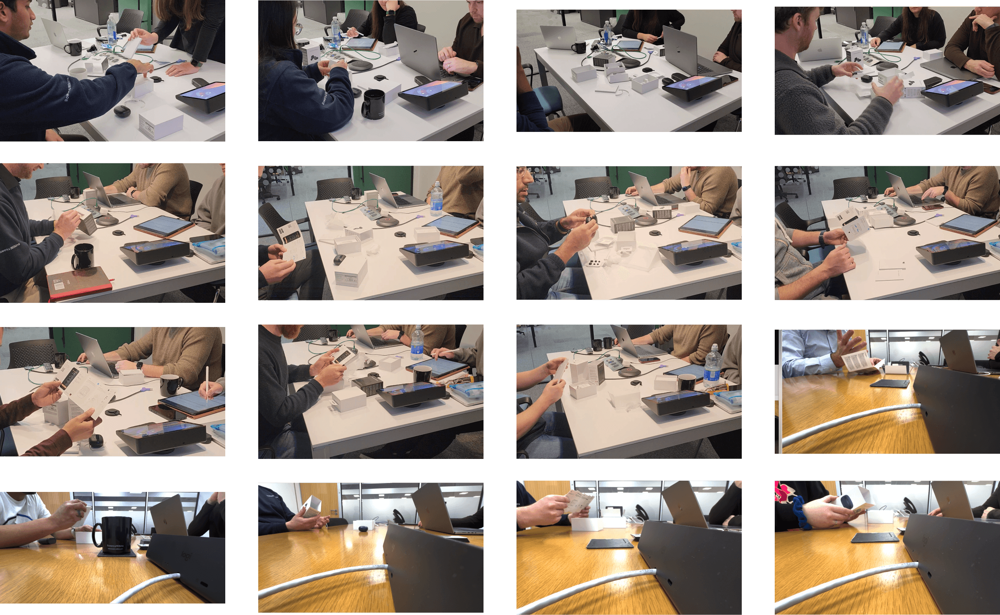
Sneak peek from user tests
The Quick Start Guide
Z-Fold with instructions
This is a preview of the interactive Z-Fold Quick Start Guide. It helps to understand the sequence of steps mentioned.
Guide
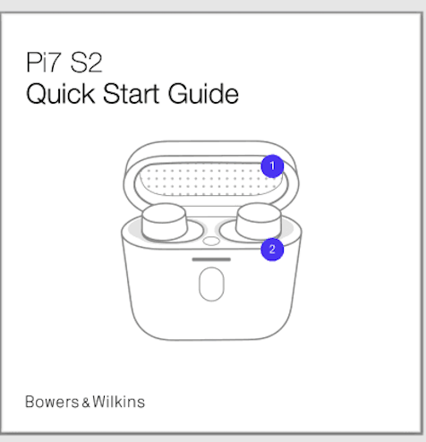
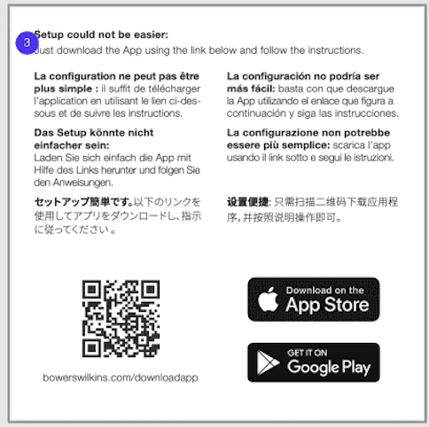
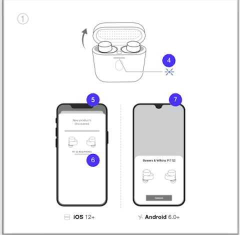
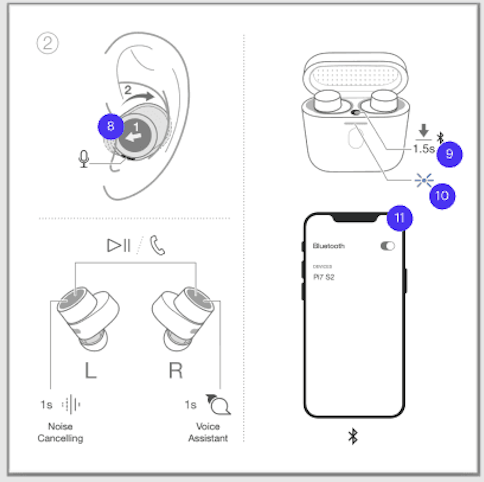
Click to open
framing
Observing the pairing experience in-person
- Lack of order / sequence of actions needed to set up
- Lack of clarity with too many arrows and pointers
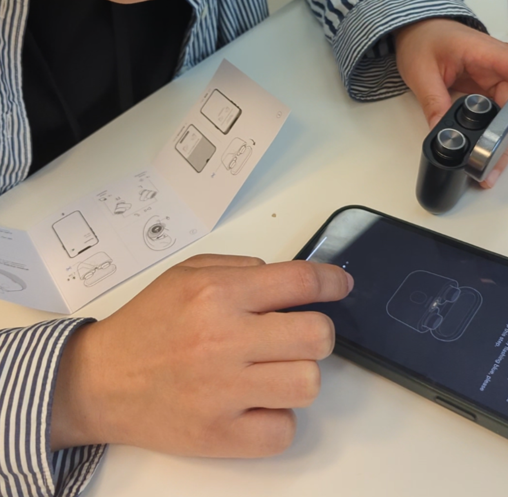
Collaborative feedback
Listing all pain-points
Working across teams to surface and consolidate every identified issue with the existing guide before moving toward solutions.
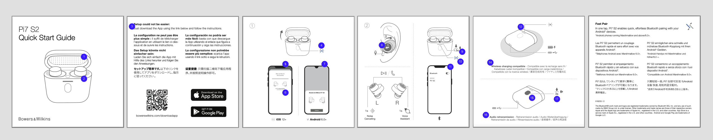
Key issues identified
Monochromatic design
The absence of accent colours or hierarchy made it difficult to distinguish the order of importance.
Legibility issues
The text was challenging to read, compromising user understanding.
Overfilled pages
Lacked sufficient negative space, creating a visually overwhelming experience. Numerous illustrations were crammed into a small format, detracting from clarity. Each page attempted to convey too much information, leading to user confusion.
Priorities
Separation of controls & fitting
To further enhance understanding, controls and fitting instructions are grouped but shown separately. This allows users to easily navigate the guide and apply instructions at their own pace.
We categorised actions according to the order of use and separated each.
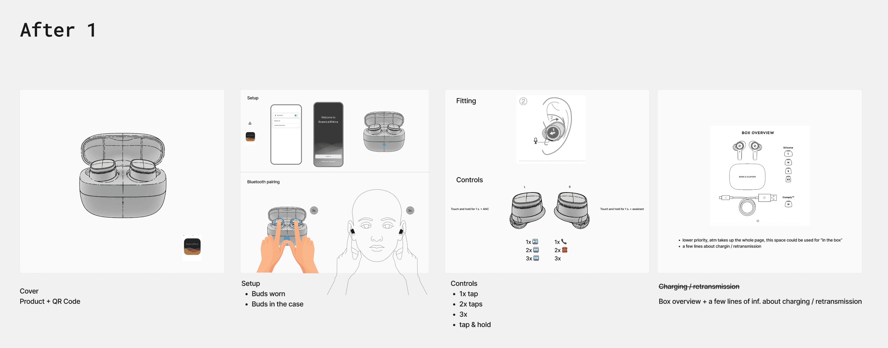
Feedback sessions
Sorting the quick start guide pages
After deciding on the pages and layout, it was time to print these out for getting more feedback. We were primarily focused on the order of content.
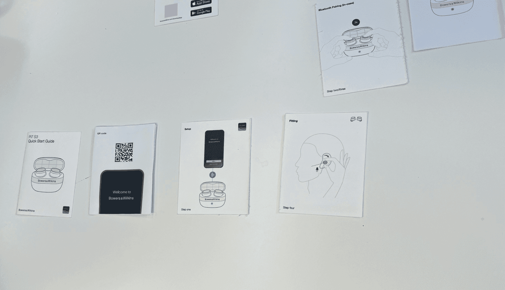
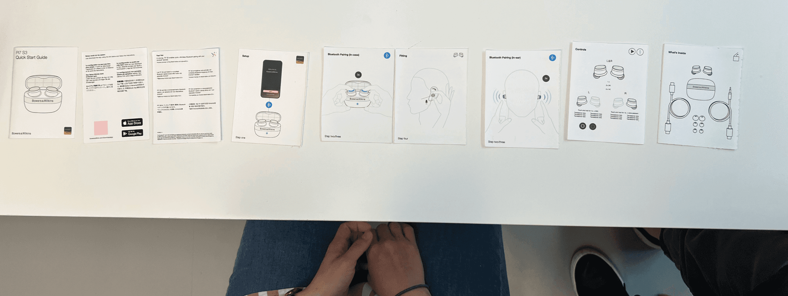
Testing
Packaging & QSG tests
Combination of packaging and QSG questions tested together to understand how the physical and printed experiences interact.
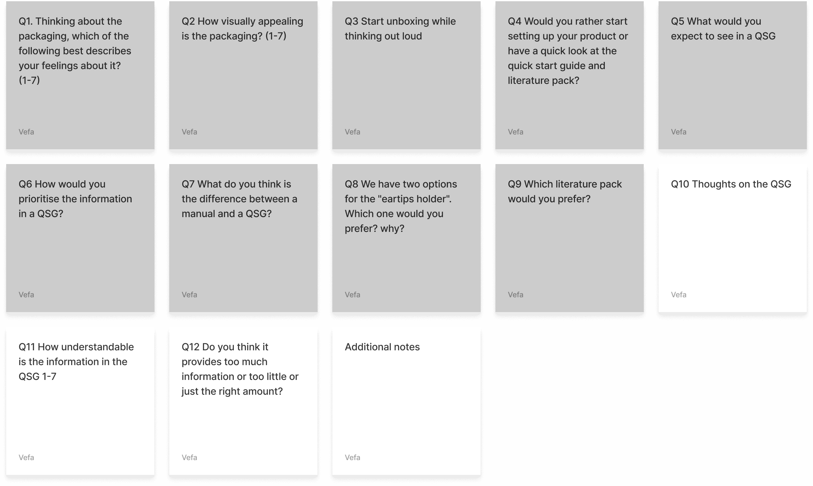
Test sample
13 participants
13 participants received unboxed product packaging for testing, including the QSG. Recordings from each test session were reviewed for qualitative insights.
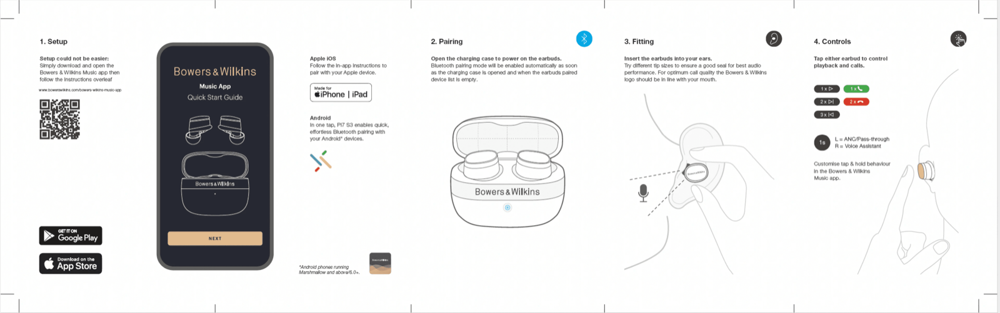
Insights
Key findings from round 1
Overall sentiment was positive, with a clearer hierarchy. IT followed the setup sequence more logically and felt better aligned with the natural progression of steps.
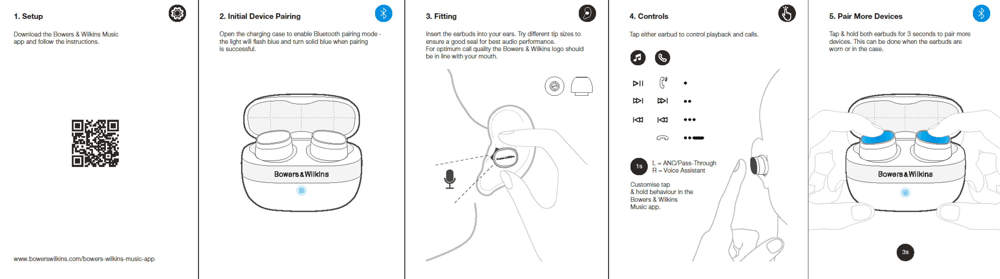
"The overall direction and instructions are good. Controls are quite straightforward. I understand what the dots mean. Pair more devices would confuse me — for me the QSG is to get it in the box to playing audio quickly."
Next step
Further refinements
- 'Manual pairing' removed — it was identified as a point of confusion
- Addition of wired & wireless charging
- Greater focus placed on the QR code as a key step for app engagement
- Control section adjusted
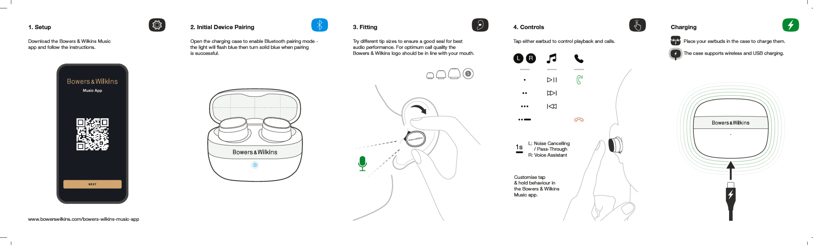
Final result
The outcome
Three rounds of testing, iterative refinement, and close cross-team collaboration resulted in a clear, structured quick start guide that leads users confidently through their first experience. This layout has since been adopted across B&W and Denon headphones.
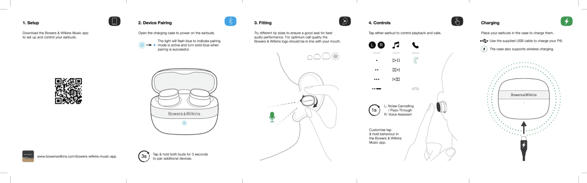